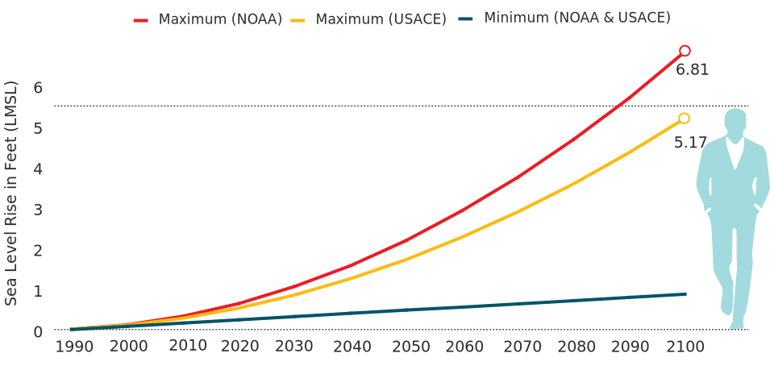

City Up High
Southeast Florida is considered one of the most vulnerable areas to climate change and sea level rise. Since 1870, average global sea level has risen by about 8 inches, while the Southeast Florida has risen 12 inches. In the City of Miami Beach, sea level rise has made prolonged flooding a frequent event after strong storms.
Mean Sea Level Rise Trend in Miami Beach
Less than in 100 years, it is possible that sea level exceeds average human being's height.
Salt Water Intrusion
Even though the dominant cause of saltwater intrusion is well-field withdrawals, the rising sea in South Florida exacerbates the extent of saltwater intrusion. Salt water spreads from both south and east coast line to the underground of the mainland South Florida where the limestone plateau only aggravates the intrusion to Biscayne Aquifer for its porous, vulnerable structure. Excessive pumping fresh water from the aquifer and unprotected canal assist the saltwater seep into fresh water system, which requires desalting facilities in the water supply companies.
City Under Water?
The City of Miami Beach is facing the challenges from the rising sea level due its relative flat terrain and porous limestone geologic feature as other areas in South Florida. Occasional heavy rains often lead to flooding, some area flood with high tide. There are two high tide periods: from March to May, is the spring high tide; when it comes to October, “King tide” visits the city every year, the fall tide usually extent to November, even till December. Not only the residents are experience inconvenient commuting but also business and property owners have to deal with profit damages. The city also loses their vegetation to salt water into root zones, which prevents the ecosystem from protecting local environment.
Where Over 550 Millions Go?
The City of Miami Beach is one of communities in the Southeast Florida Regional Climate Change Compact that serves to assess the need of different areas and set actions to combat climate change. The city is collaborating with other communities, Broward, Miami-Dade, Monroe and Palm Beach counties to develop a series of adaptation plans to control the existing flooding situation as well as to prevent future effects from climate change.
Since the new city mayor, commissioners and city engineer came in a year and a half ago, the City of Miami Beach has been adapting a project focused on reversing storm water to the ocean with installing pumped drainage system and Tideflex valves which prevent saltwater flood back to the pipes. To make most use of the old infrastructures, the city also has been building pipes to connect the existing isolated pumps. The city is also working on raising streets and sidewalks in low areas to higher elevations, reset the building standards to survive from rising ground water. While focusing on the implementing proven approaches, the City of Miami Beach prepares best for the potential future effects from sea level rise by rising sea walls and planting vegetation to build “Living sea walls”.
The City Engineer, Bruce Mowry says, “This year, we have 100 millions budget on the project, and I plan to ask for 150 millions next year. It probably will cost 300 millions in a three year program.
Before the new project started, there were some isolated pumps which pump flood back to the underground aquifer. However, as the sea level rises and more frequent flooding over streets, the isolated pumps couldn't promise the street dry. The new plan is to build up more pipes underground to connect all the isolated pumps and lead the flood water back to the ocean on the west side of the island.
When the ocean rises, the existing one-way valves which allow water to be discharged to sea while keeps saltwater flow back couldn't open. To increase the water pressure, the city has been installed pump stationsalong the west coast where frequent flooding happens.
The next step is to raise the streets , and to change the building code to make sure that future properties will be built at higher elevation to avoid flood.
The existing sea walls are not high enough to prevent rising saltwater from flooding to the streets near Indian Creek during high tides. The city decided to increase all the sea walls, and incorporate with vegetation to build living sea walls.
How does the pump station works with pollution control

What a lifted road looks like